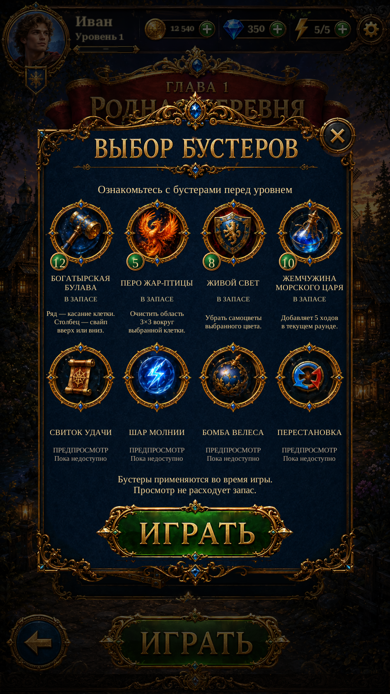

Continuous Booster Rim R3Continuous Booster Rim · R3
A complete circular band has been recreated through Scenario. One coherent gold rim replaces all eight patched bands. Original booster subjects remain intact; existing shared sprite bindings update the consuming pages.
Inspect original / isolated band / corrected icon · Report
Actual Unity captures. The original reference is labelled separately. Live badges remain independent from the icon art.
